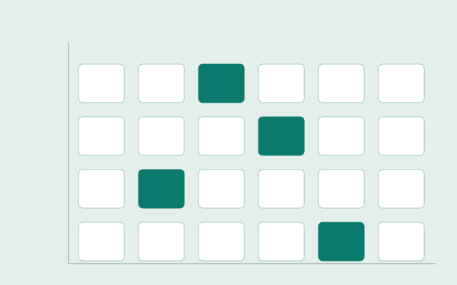
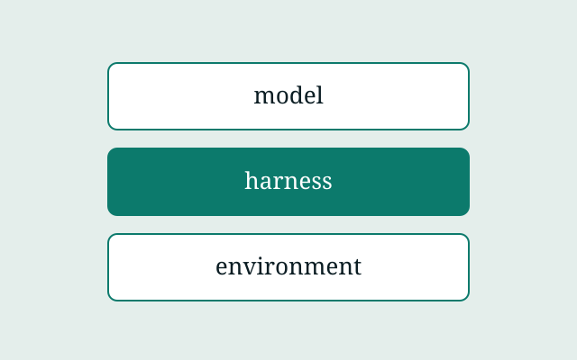
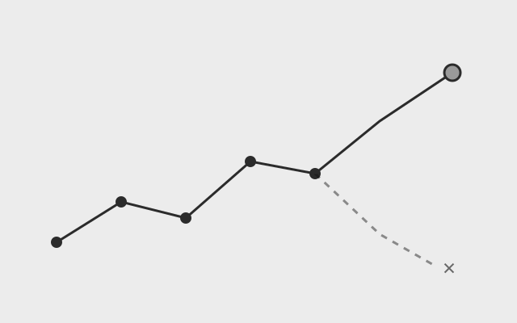

Trial by Trace
Benchmarking AI agent harnesses for reliability and failure attribution. TraceTrial-Bench examines 95 tasks across four harnesses and nine model configurations.
We build evaluations that make agent behavior visible. Through research in evaluation, synthetic data, and training, we study how intelligent systems work—and how they can improve.
Reports, papers, and moments that move our work forward.
View the full timelineBenchmarking AI agent harnesses for reliability and failure attribution. TraceTrial-Bench examines 95 tasks across four harnesses and nine model configurations.
InfoQ’s conference recap lists TraceLite AI among the organizations represented by speakers at AICon Shenzhen 2026.
Optimizing recruitment proactive dialogue agents through simulator-based data evaluation and selection.
Rollout-Guided Adaptive Pixel-Space Reasoning.
Grounding multimodal reward-model rubrics in task-relevant visual evidence and verifying their consistency.
Separating privileged state tracking from simulated user utterances to support multi-turn dialogue policy training.
Selecting relevant frames and resampling visual evidence for video reasoning.
A Benchmark for Explicit Stepwise Causal Reasoning in Videos.

Most multimodal reward models emit only an outcome reward, which is sparse and misses the structure of human preference. MM-VeriRubric builds training data for multimodal rubric generation at scale: task-aware visual clue extraction grounds rubrics in task-relevant image evidence, and rubric-aligned rejected responses with controlled error dimensions let each rubric be verified through consistency checking. The verified data trains both a rubric generator and a rubric-based reward model, improving preference judgment by 16.4% on VL-RewardBench and Best-of-5 selection by 13.1% on MMMU-Pro.

Simulator-assisted reinforcement learning is a practical way to train multi-turn dialogue agents, but policy optimization gets misled when the simulated user gives inconsistent feedback across long trajectories. DPS decouples task-conditioned privileged state tracking from surface utterance realization; those privileged states stay hidden from the agent but are used during training to derive dense, state-aware process rewards that complement sparse outcome signals. The work also introduces RecruitmentBench, a persuasion dialogue benchmark grounded in anonymized real-world logs, and reports improved measured simulator fidelity and stronger fine-tuned policy performance.

Uniform frame sampling dilutes evidence in long videos, and existing pixel-space video agents lack reward mechanisms that enforce evidence purity or let them look beyond pre-sampled frames. This work introduces EARL, an evidence-aware reinforcement learning framework that turns the model into an active interrogator of evidence: it selects the most relevant frames and re-samples locally around them to recover fine-grained temporal detail. Across five video reasoning benchmarks the EARL-trained 7B model sets a new state of the art among open-source Video LLMs, reaching 59.8% on LongVideoBench, 69.0% on MVBench and 64.9% on VideoMME.
Pixel-level visual operations help Vision-Language Models handle fine-grained detail, but they are routinely overused — costing efficiency and pulling attention toward irrelevant regions. This paper proposes the first framework for adaptive pixel reasoning, which decides per query whether a pixel operation is warranted: operation-aware supervised fine-tuning establishes baseline competence, then a rollout-guided reinforcement learning stage uses feedback from the model's own responses to learn when to invoke tools. The result reaches 73.4% accuracy on HR-Bench 4K at a tool usage ratio of only 20.1% — 66.5% less tool use than prior methods, with higher accuracy.

Proactive dialogue agents steer recruitment conversations toward concrete business outcomes, but training them is bottlenecked by the scarcity of high-quality, goal-oriented domain data. SimRPD is a three-stage framework: a high-fidelity user simulator synthesizes large-scale multi-turn conversations, a Chain-of-Intention evaluation framework assesses the simulator and selects high-quality data using both global-level and instance-level metrics, and the agent is then trained on that selection. In a real-world recruitment scenario SimRPD outperforms existing simulator-based data selection strategies.

Fish disease spreads rapidly in high-density aquaculture, where manual inspection is too slow to catch it early. STAFDD combines what a fish looks like with how it moves: SSCA-YOLO, an improved YOLOv8 with an SPD-CBS downsampling module, a small-object head and coordinate attention, detects body-surface abnormalities; ByteSort with ReID features tracks individuals into stable trajectories; an LSTM reads abnormal behaviour from those trajectories; and a learnable MLP gate fuses the two branches by confidence. On a dataset built from Aeromonas hydrophila-challenged Prussian carp, tracking reaches 89.74% HOTA and 94.05% MOTA, and overall classification accuracy reaches 96.86%.
Placeholder description text.
Placeholder description text.
What we are working on, and what we plan to build next.

We want to describe an environment the way we describe a model: by listing the factors that change what the right move is.
Read the note
The same model can behave very differently inside different agent harnesses. We want that difference to be measurable.
Read the note
Agents fail all the time on real tasks, and most of those failures are thrown away. We want to keep the useful ones.
Read the noteInfoQ’s conference recap lists TraceLite AI among the organizations represented by speakers at AICon Shenzhen 2026.